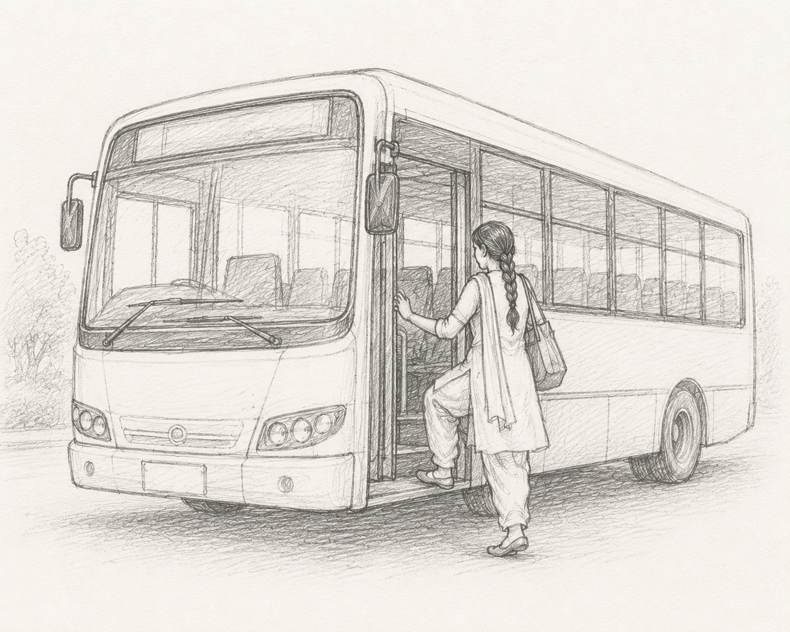

I came across a beautifully written paper while researching for my econometric coursework and honestly, it should not be left on NBER — "Gender-Specific Transportation Costs and Female Time Use: Evidence from India's Pink Slip Program" by Chen, Coşar, Ghose, Mahendru, and Sekhri (2024) — studying the free bus schemes for women in Punjab and Tamil Nadu.
Disclaimer : I did not verify the data and re-run their regressions . The paper also hasn’t been peer-reviewed yet, so this is kind of a review of a review that hasn’t happened.
Striking part
Like anybody else, I also thought that on average, free bus travel means getting more women working. Economics is rarely that polite. The study had other statistically significant findings than this this direct consequence :
- Married women with low or medium education actually worked fewer paid-hours after the introduction of this scheme. Turned out that they started using the free service for more markets, groceries and pickups. They seemed to have used the free rides for more housework commutation than for the job.
- Husbands quietly reduced their own share of household chores and worked more hours outside. The free bus effectively let wife to travel far for better bargains and cheaper products. This has reduced spendings on stationeries and other items.
- Already Employed and unmarried now work more. — This is the highlight. They are working 26min/day more. Might be a mode(of transportation)-substitution effect.
- New Bus-riders were found travelling twice the distance as compared in places where the scheme is absent— likely a long term signal that job access may be improving.
Now some Economics ( Skip if you dislike technicalities)
Main dataset is the household survey covering roughly 1,60,000 household across India for three years. Treatment states are Punjab and Tamil Nadu; while the control group is the other 20 Indian states and union territories. The key outcome variables are : household spendings on transportation, individual time spent on travelling etc. The control variables include individual and household effects, education effects, state specific variables.
They have used synthetic difference-in-difference method. Yeah, it is one of the well-regarded, modern causal-inference method, and they back it up with five separate robustness checks also. Technically I would rate it as a very solid work. Data set sanctity might be questionable, as it will take some years together to confirm the findings as the scheme is launched recently.
Bottomline
The paper’s own numbers suggest the effect is more modest and slower than advertised. Furthermore, the roughly 1000-1500 INR in savings is not a net gain, as the paper itself acknowledges that this money is spent elsewhere. With only two treated states, a pandemic which muddled the equations, the best evidence of long-run gains need to wait.
As it says, there’s no such thing as a free lunch.